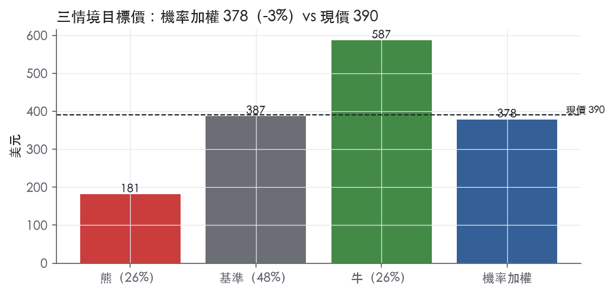
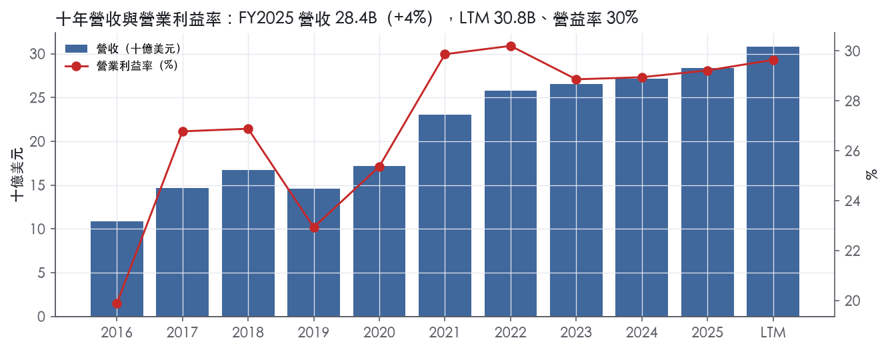
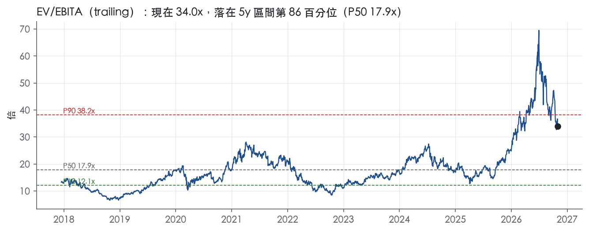
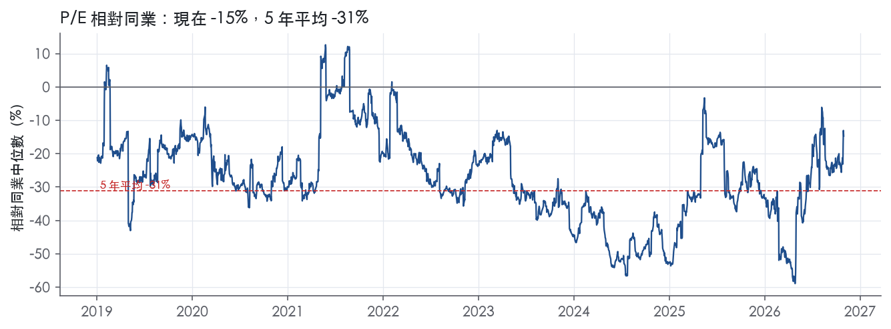
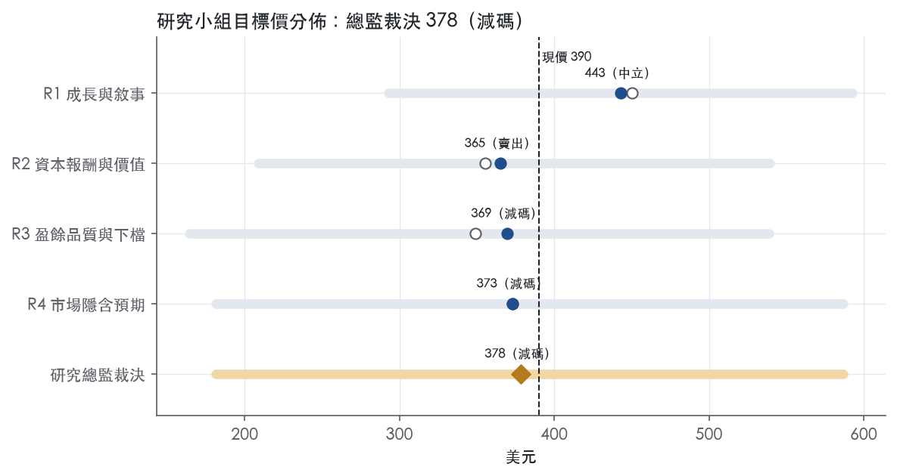
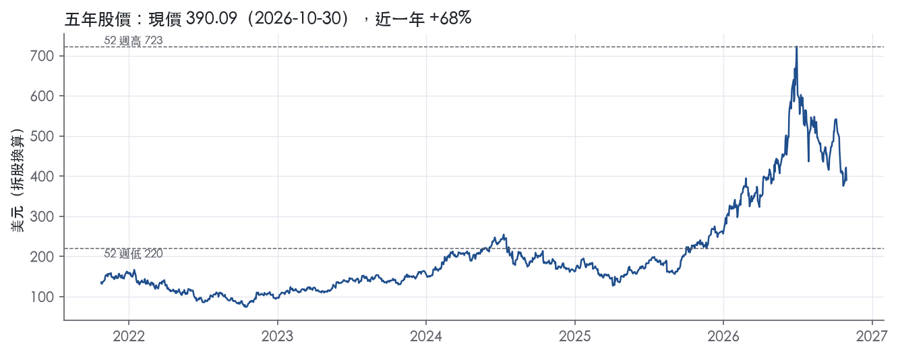

評等總表 › 資訊科技 › AMAT
盈餘上修已入價，絕對持平、相對減碼｜評等 減碼｜目標價 378
| 評等 | 減碼（邊界，鄰近賣出） |
| 12 個月目標價 | 378 美元 |
| 現價 | 390.09 美元（2026-10-30） |
| 預期報酬 | 股價 -3.0%＋股息 0.5%＝總報酬 -2.5%；同業籃門檻 10.0%，超額 -12.5% |
| 估值方法 | EV/EBITA 20.0x，套在第 5–8 季的EBITA（也就是一年後的未來四季） |
| 三情境 | 熊 181／基準 387／牛 587 |
| 研究流程 | 四位研究員兩輪辯論＋研究總監裁決 |
| 資料來源 | SEC EDGAR XBRL、Tiingo、FRED（全免費） |
盈餘上修已入價，絕對持平、相對減碼（研究總監裁決，四位研究員兩輪辯論後）
評等 減碼（邊界，鄰近賣出）｜12 個月目標價 378 美元（總監三情境機率加權 385 與研究員中位數 371 各半）｜現價 390.09（2026-10-30）
預期報酬：股價 -3.0%＋股息 0.5%＝總報酬 -2.5%。同業籃門檻 10.0%，超額 -12.5%，離賣出的分界不到三個百分點，屬邊界評等（落在其他級距的機率約三成）。
估值方法：EV/EBITA 20.0x，套在第 5–8 季的EBITA（也就是一年後的未來四季）。三情境：熊 181（26%）／基準 387（48%）／牛 587（26%）。
什麼會讓研究總監改變看法：FY2027Q1 指引中點高於 FY2026Q4 實績且公司揭露 2028 年產能已被預訂，會把 y2 上調到 15% 以上、倍數升到 24x（牛情境成為基準）；反向，BIS 新規公告或 DRAM 占系統營收自 26% 回落，會提高熊情境機率。
| 過去四季（實際，FY2026Q3） | 未來四季 | 第 5–8 季 | 第 9–12 季 | |
|---|---|---|---|---|
| 營收（B） | 30.8B | 41.0B | 45.1B | 43.3B |
| 營收成長 | 7.8% | 33.0% | 10.0% | -4.0% |
| 營業利益率 | 29.6% | 33.5% | 33.0% | 30.5% |
| EPS（美元） | 11.57 | 14.83 | 16.14 | 14.32 |
| EPS 成長 | 38.1% | 28.2% | 8.8% | -11.3% |
| 每股股息（美元） | 1.98 | 1.98 | 1.98 | 1.98 |
| P/E（現價） | 33.7x | 26.3x | 24.2x | 27.2x |
| 股息殖利率（現價） | 0.5% | 0.5% | 0.5% | 0.5% |
過去四季為申報數字；預測為研究總監的假設、程式計算。倍數與殖利率都用現價計算，用來看現價對應各期獲利的高低。
| 情境 | 機率（歷史） | 故事 | 未來四季營收成長 | 第 5–8 季營益率 | 倍數 | 目標價 | 股價漲跌 |
|---|---|---|---|---|---|---|---|
| 熊 | 26%（25%） | 風險表第 1 條（BIS 擴大對中管制）與第 3 條（記憶體資本支出反轉）疊加：Q4 指引落地後 2027 下半年客戶下修，Q5–Q8 衰退深於 FY2019，營益率去槓桿至 27%，16x 落在事後實現帶 P75 | 25.0% | 27.0% | 16.0x | 181 | -53.5% |
| 基準 | 48%（48%） | 2027 照指引水位走高、2028 成長降到一成、2029 轉負；市場對下一年盈餘付的前瞻倍數與今天相同 | 33.0% | 33.0% | 20.0x | 387 | -0.8% |
| 牛 | 26%（27%） | 公司「2027 強勁、需求至本十年末」成真，2028 續成長兩成，營益率高於 Q3 單季紀錄但低於系統分部 37.7%，類股維持高倍數 | 42.0% | 36.0% | 24.0x | 587 | 50.4% |
目標價由程式依研究總監的驅動與倍數計算；機率由研究總監給定。括號內是歷史頻率：把這檔股票過去十年 12 個月報酬的波動形狀，置中在基準情境，結果落在各情境附近的比例。

四位研究員用不同方法各自估值，回應研究總監的質疑後交出第二輪，最後由總監逐點裁決。各研究員的主張見第七章，裁決理由見第八章，完整論證見《研究底稿》。
| 立場（一輪→二輪） | 加權目標價（一輪→二輪） | 評等（一輪→二輪） | 第二輪倍數 | 熊～牛目標價 | |
|---|---|---|---|---|---|
| R1 成長與敘事 | 看多→看多 | 450→443 | 加碼→中立 | 25.0x | 293～593 |
| R2 資本報酬與價值 | 看空→看空 | 355→365 | 賣出→賣出 | 21.0x | 209～539 |
| R3 盈餘品質與下檔 | 看空→看空 | 349→369 | 賣出→減碼 | 20.0x | 164～539 |
| R4 市場隱含預期 | 看空→看空 | 373→373 | 減碼→減碼 | 19.0x | 181～587 |
| 研究總監裁決 | 看空 | 378 | 減碼 | 20.0x | 181～587 |
目標價由程式依各自的驅動與倍數計算；評等＝機率加權總報酬 − 同業籃門檻。
Applied Materials 是全球半導體製造設備龍頭，為幾乎所有半導體生產環節提供材料工程解決方案¹。公司成立於1967年，為德拉瓦州公司，財年結束於10月最後一個星期日¹。客戶的終端產品涵蓋個人電腦、手機、AI與資料中心伺服器、汽車、連網裝置、工業應用與消費電子¹。公司定位是透過業界最完整的半導體設備產品組合，連結並協同優化不同技術，協助客戶應對半導體製造日益複雜的挑戰¹。簡單說，AMAT 賣的不是單一機台，而是一整套從薄膜、蝕刻到製程控制與先進封裝的「材料工程」解決方案，客戶是晶圓代工廠、邏輯晶片廠與記憶體大廠。FY2025 LTM 營收 30.84B 美元，是半導體設備業規模最大的公司之一。
公司分為兩大可報告分部：Semiconductor Systems（半導體系統）與 Applied Global Services（AGS，應用全球服務），其中 Semiconductor Systems 是淨營收最大貢獻者¹。此外還有 Corporate and Other，主要是顯示器設備業務¹。
Semiconductor Systems 分部設計、開發、製造與銷售涵蓋材料工程、製程控制與先進封裝等晶片製造流程的各類設備，產品涉及圖形轉換成器件結構、電晶體與互連製造、量測、檢測與複檢，以及封裝技術¹。此分部銷售依客戶所屬市場分為：晶圓代工、邏輯及其他；DRAM；以及快閃記憶體（NAND）¹。FY2026Q3 該分部營收 7,040M 美元，年增自 5,564M 美元，其中晶圓代工/邏輯及其他占67%、DRAM占26%、快閃記憶體占7%²；非GAAP營益率達38.0%，較去年同期33.2%明顯擴張²，DRAM占比持續上升反映AI帶動的記憶體資本支出熱潮。
AGS 分部提供服務、備品與工廠自動化軟體給全球客戶晶圓廠，截至FY2025年底前亦銷售200毫米及其他設備給非先進製程市場客戶，自FY2026第一季起200毫米設備業務已併入Semiconductor Systems分部¹。FY2026Q3 AGS營收1,781M美元，年增自1,463M美元，營益率30.1%，優於去年同期27.3%²。
截至2025年10月26日，公司總在手訂單（backlog）為15,002M美元，其中Semiconductor Systems占47%（7,105M）、AGS占48%（7,141M）、Corporate and Other占5%（756M）¹，約31%的backlog預期無法在未來12個月內出貨¹。backlog不代表未來實際銷售，訂單可能被延遲或取消¹。
公司幾乎完全透過直接銷售團隊在全球銷售產品，原因是產品技術門檻高¹。FY2025兩大客戶合計占淨營收約19%與15%，客戶集中度不低¹。製造活動分布於美國、新加坡、日本、中國、韓國、台灣、以色列及亞歐其他國家的分散式製造模式¹。研發與工程主要在美國、印度與以色列進行，客戶展示則主要在美國、中國、台灣、以色列與南韓¹。公司正擴建新加坡Tampines Campus，投資5億美元，將使其新加坡先進無塵室產能超過倍增，以支援全球AI基礎設施建置²。截至2025年10月26日，公司約有36,500名正職員工分布25個國家，其中約46%在亞太區、42%在北美、12%在歐洲/中東¹，顯示其銷售與人力布局高度貼近亞太晶圓廠客戶群。
FY2025Q4（截至2025-10-26）營收6.80B美元，年減3.5%，營益率回落至25.2%（is/dv 資料包8季表）。FY2026Q1營收7.01B美元，年減2.1%，營益率回升至26.1%（資料包8季表）。
FY2026Q2（截至2026-04-26）創紀錄營收7.91B美元，年增11%，GAAP毛利率49.9%、非GAAP毛利率50.0%³；GAAP EPS創紀錄達3.51美元，非GAAP EPS創紀錄2.86美元，分別年增33%與20%³；CEO表示現在預期半導體設備業務在2026日曆年成長超過30%³；公司將季度現金股息由每股0.46美元上調15%至0.53美元，為連續第九年增加股息³；當季非GAAP自由現金流大幅下滑至210M美元，年減80%³。
FY2026Q3（截至2026-07-26）創紀錄營收9.12B美元，年增25%，GAAP毛利率50.3%、非GAAP毛利率50.4%²；GAAP EPS 3.17美元、非GAAP EPS創紀錄3.50美元，分別年增43%與41%²；CFO指出這是連續第13個季度毛利率年增擴張²；公司營運現金流創紀錄達3.04B美元，當季以4.40億美元回購股票及4.20億美元股利分配共8.60億美元回饋股東²。公司對FY2026Q4指引為營收10,250M美元±500M、非GAAP稀釋EPS 4.02美元±0.20美元²。CEO表示因AI在全球快速普及帶動對公司材料工程解決方案的需求空前，公司進一步上調2026日曆年Semiconductor Systems營收展望，並有信心成長快於市場，預期2027年將是另一個強勁成長年²；CFO表示下半年將持續強勁成長，特別是DRAM、先進製程晶圓代工邏輯與先進封裝，並表示公司正加碼製造產能投資以支應至本十年末的預期需求²。整體而言，近四季呈現先緩後急加速的V型軌跡，FY2026Q2、Q3營收與毛利率同步創高，顯示AI資本支出周期已明確反映在公司營收結構中。
公司長期成長策略要求持續開發新的材料工程解決方案，包括能擴展到新興與相鄰市場的產品與平台，並須在強勁需求出現前先行交付新產品與技術，讓客戶在早期技術選型階段就能納入其製造計畫¹。公司指出資料成長與AI、物聯網、機器人、智慧車輛等新興終端市場驅動因子，正在為產業創造下一波成長動能¹。公司設立EPIC Center，目的是大幅縮短從早期研究到全面量產商業化突破性技術所需的時間，FY2026Q3 EPIC夥伴已擴展至11個，涵蓋Broadcom、UC Berkeley、SCREEN SPE等²；此前已與TSMC、三星、SK hynix、Micron、Advantest等建立合作³。公司亦強調正在新加坡擴建先進無塵室產能，並持續加碼製造產能投資以支援到本十年末的預期需求²。
AMAT的成長敘事高度集中在AI驅動的晶圓資本支出循環，尤其是DRAM/HBM與先進封裝需求，這與FY2026Q2、Q3營收及毛利率同步跳升的實際數字一致。EPIC Center的生態綁定（從晶片廠到設備同業SCREEN、學研機構）本質上是把技術話語權前置到客戶早期技術選型階段，鞏固其設備組合的黏著度。風險在於客戶集中度（FY2025兩大客戶占營收34%）與地緣政治出口管制，10-K已揭露中國本土設備商在政策扶持下的競爭壓力。

AMAT 評為寬護城河，主要來自兩點：製程 know-how 與專利庫，以及在客戶早期技術選型中被綁定後形成的轉換成本。我們有把握未來 10 年以上 ROIC 仍高於資本成本。過去九年 ROIC 最低是 29.8%，連 FY2019 營收衰退 12.6%的下行年都遠高於 10.0% 的資本成本代理值。趨勢判為穩定而非變寬，因為毛利率持續創高，但 ROIC 從高點回落、資本支出強度上升，兩股力量互相抵銷。
優勢來源是無形資產與轉換成本兩類，其餘三類沒有足夠證據，不列。
無形資產（專利與製程 know-how）：公司在美國及其他國家擁有超過 23,500 項有效專利，另有新發明的申請待審中¹。公司表示不依賴任何單一專利，但專利權及依專利製造銷售的產品整體構成業務的重要元素；此外還擁有商標、know-how、營業秘密與著作權¹。對設備商來說，真正難複製的是材料、製程配方與硬體整合的 know-how，專利數只是外顯指標。
轉換成本（早期選型＋裝機基礎）：公司的研發投資必須在強勁需求出現前交付新產品與技術，讓客戶在早期技術選型階段就把這些產品納入製造計畫¹。機台一旦在新節點被選定並完成驗證，客戶要在量產期間換供應商，就得重新驗證良率，轉換成本由此產生。公司能結合、協同優化並整合自家技術，開發高度差異化的解決方案¹。整合度越高，客戶越難只替換其中一個環節。AGS 以服務、備品與工廠自動化軟體，支援公司龐大的全球裝機基礎¹。截至 2025 年 10 月 26 日，AGS backlog 為 7,141M 美元，占總 backlog 的 48%¹。這代表裝機基礎已經轉化成可見度高的經常性收入。
未列入的類別如下。網路效應不適用於設備業。成本優勢方面，10-K 沒有揭露相對同業的成本結構證據。效率規模方面，10-K 明寫產業高度競爭，且各分部都存在實質競爭¹。這與效率規模所需的寡占前提不符。
數字整體支持寬護城河，但 ROIC 走勢與營收波動有兩處衝突，說明如下。
支持的證據：ROIC 十年平均 42.4%，減去資本成本後超額 32.4%，有資料的九年全部高於資本成本。毛利率標準差僅 2.0%，區間 41.7% 至 48.7%。同期營收成長的標準差高達 14.6%，可見定價權沒有隨景氣起伏而崩潰。最新一季毛利率 50.3%。CFO 指出這是連續第 13 個季度毛利率年增擴張²。
衝突一：ROIC 下滑。最新 ROIC 35.9%，低於十年平均 42.4%，也遠低於 FY2021 的高點 53.2%。主因是資本支出占營收比重從 FY2024 的 4.4%跳升到 FY2025 的 8.0%，問題出在分母擴張，不在利潤率惡化。同期營益率 29.2%，仍高於十年平均 26.9%。我們把這段下滑定性為產能投資期，不是護城河退化，所以不下修評級，但也不給「變寬」。
衝突二：營收高度週期。營收成長最低到 -12.6%。護城河保護的是利潤率與回報，不保護景氣週期。FY2019 谷底時營益率仍有 22.9%，足以支持寬評級。資本成本代理值用 10 年債 4.98%加 5% 計算；即使利率再上升數個百分點，ROIC 的歷史最低值仍有寬裕緩衝。
最大的侵蝕風險是中國的在地替代與出口管制，其次是技術轉折失誤與客戶集中。
目標倍數相對同業應給溢價：ROIC 九年全數高於資本成本、毛利率標準差僅 2.0%，護城河足以支撐 10 年以上的超額回報期。但溢價應套在正常化盈餘上。目前 P/E 33.7x（band.pe 現在）已接近 5 年 P90 的 39.3x，倍數裡的景氣高點成分不該再被護城河溢價重複計入。趨勢判為穩定而非變寬，不支持擴大溢價幅度；若這輪資本支出循環結束後 ROIC 沒有回到十年平均 42.4%，應改為與同業持平。
| 指標 | 最新 | 十年平均 | 標準差 | 最低 | 最高 |
|---|---|---|---|---|---|
| ROIC | 35.9% | 42.4% | 7.1% | 29.8% | 53.2% |
| 毛利率 | 48.7% | 45.7% | 2.0% | 41.7% | 48.7% |
| 營業利益率 | 29.2% | 26.9% | 3.2% | 19.9% | 30.2% |
| FCF 利潤率 | 20.1% | 21.7% | 3.5% | 17.9% | 28.6% |
| ROE | 35.5% | 42.4% | 6.5% | 35.5% | 53.4% |
程式計算。資本成本代理值（10 年債＋5%）：10.0%；ROIC 平均減資本成本：32.4%；ROIC 有資料的 9 年中，高於資本成本 9 年。
LTM 營業現金流／淨利為 0.91x、FCF／淨利為 0.61x，兩項均落在黃燈區，主因是 FY2025 資本支出／營收跳升到 8.0%，遠高於十年平均。但拉長看三年平均 CFO／淨利 1.21x、FCF／淨利 0.99x，十年平均 1.14x／0.98x，都在綠燈以上，顯示這是近兩年資本投入期而非盈餘品質惡化。季度數據可見 FY2026Q2 CFO 僅 0.84B、FCF 僅 0.21B（資料包），但 FY2026Q3 CFO 已回升到 3.04B、FCF 2.33B（資料包；8-K 亦稱「record cash from operations of $3.04 billion」²），顯示現金流呈季度波動而非結構性落後。應計比率 LTM 為 2.1%、近三年平均為 -4.6%、十年平均 -1.9%，均未觸及 >5.0% 紅線，應收帳款成長減營收成長為 -5.3pp、存貨差距為 +4.7pp，兩項營運資金指標都在綠燈，代表盈餘沒有被應收或存貨堆積綁架。整體結論是現金轉換暫時性落後，但沒有看到應計堆高的證據。
Q3 FY2026 GAAP EPS 3.17 美元 vs 非 GAAP EPS 3.50 美元，GAAP 淨利 2,538M vs 非 GAAP 淨利 2,795M，差距約 257M²。公司非 GAAP 調整項目包含「certain items related to mergers and acquisitions; restructuring and severance charges...legal settlement charges; impairments of assets; gain or loss, dividends and impairments on strategic investments; certain income tax items; and other discrete adjustments」²。Q4 FY2026 展望中明確點出三項：已完成併購相關已知費用 0.01 美元／股、股權酬勞正常化稅務利益 0.01 美元／股、公司內部無形資產移轉的所得稅利益 0.05 美元／股²。SBC 本身不在非 GAAP 加回項目列表中，SBC／營收 LTM 為 2.3%、三年平均 2.1%、十年平均 1.8%，三項都在綠燈，且本系統不加回 SBC，代表 SBC 成本已經反映在 GAAP 數字裡，不是灌水來源。稅務相關調整（內部無形資產移轉稅收利益 0.05 美元／股）屬於非經營性、非現金一次性項目，應視為真實但不可重複的利得；併購費用與重組費用屬性質上接近一次性，但併購活動頻率若提高則應持續檢視。
槓桿與付息能力皆為綠燈，不構成限制倍數的因素。淨負債／EBITDA LTM 為 -0.15x、三年平均 -0.23x、十年平均 -0.01x，公司長期處於淨現金狀態；快照淨負債為 -1.49B。利息保障倍數 LTM 33.0x、三年平均 31.6x、十年平均 24.3x，均遠高於 8.00x 綠燈門檻。股東回饋方面，Q3 FY2026 以股票回購與現金股利合計回饋股東 860M（440M 回購加 420M 股利）²。（股利＋回購）／淨利 LTM 38.2%、三年平均 68.6%、十年平均 92.3%，三者都落在黃燈，但數值仍小於 100%，不屬於舉債回饋的警訊。稀釋股數年變動 LTM +0.1%、三年平均 -2.7%、十年平均 -3.5%，長期呈淨回購縮股趨勢，LTM 轉正微幅稀釋屬短期波動、不影響長期股東結構判斷。
本期計分表沒有任何紅燈，以下針對所有黃燈逐一說明：
程式未標出其他紅旗；SBC、槓桿、利息保障、營運資金（應收／存貨）四項指標均為綠燈，無需額外解釋。
估值應以 GAAP 盈餘為基礎、對非 GAAP 數字中的稅務一次性利益（0.05 美元／股內部無形資產移轉）與併購費用加回項目打折處理，因為這些不是可持續的經營現金流來源。現金轉換的黃燈是資本支出週期造成，不需要對核心盈餘品質做額外折價，但在合理化 FCF 殖利率（目前 1.8%，快照）時應留意資本支出高峰期可能持續到 FY2026 之後。槓桿接近零負債、利息保障極高，不構成限制估值倍數的因子，目前 P/E 33.7x 處於 5 年分位 84.0%、EV/Sales 10.0x 處於 87.7% 分位，估值貴主要反映成長與 AI 需求預期，而非盈餘品質溢價，盈餘品質本身不支持進一步上調倍數，也不需要額外打折。
| 項目 | LTM | 近三年 | 十年 | 燈號 | 規則 |
|---|---|---|---|---|---|
| 營業現金流／淨利 | 0.91x | 1.21x | 1.14x | 黃 | ≥1.00x 綠、<0.80x 紅 |
| 自由現金流／淨利 | 0.61x | 0.99x | 0.98x | 黃 | ≥0.90x 綠、<0.60x 紅 |
| 應計比率（(淨利−CFO)／平均總資產） | 2.1% | -4.6% | -1.9% | 黃 | ≤0.0% 綠、>5.0% 紅 |
| SBC／營收 | 2.3% | 2.1% | 1.8% | 綠 | ≤3.0% 綠、>8.0% 紅 |
| 淨負債／EBITDA | -0.15x | -0.23x | -0.01x | 綠 | ≤1.50x 綠、>3.00x 紅 |
| 利息保障倍數（營業利益／利息） | 33.0x | 31.6x | 24.3x | 綠 | ≥8.00x 綠、<3.00x 紅 |
| 稀釋股數年變動 | 0.1% | -2.7% | -3.5% | 黃 | ≤0.0% 綠、>3.0% 紅 |
| （股利＋回購）／淨利 | 38.2% | 68.6% | 92.3% | 黃 | ≥50.0% 綠、<0.0% 紅 |
| 應收帳款成長 − 營收成長（FY2025） | -5.3pp | — | — | 綠 | ≤5pp 綠、>15pp 紅 |
| 存貨成長 − 營收成長（FY2025） | +4.7pp | — | — | 綠 | ≤5pp 綠、>15pp 紅 |
程式計算；燈號以 LTM（無則近三年平均）判定。
| 風險 | 觸發指標（看什麼數字、在哪裡看） | 對 EPS 的影響方向與粗略幅度 | 未來 12 個月發生機率（高／中／低） | 出處 |
|---|---|---|---|---|
| 出口管制擴大／中國營收限縮 | 美國商務部 Entity List 新增名單、BIS 新規公告日期；AMAT 10-Q 中國區營收占比變化 | 方向：負向，大。公司已承認過去幾年的出口限制「adversely impacted our revenues」⁴ | 高 | 10-K 年報 FY2025 Item 1A（風險因素） |
| 客戶集中度（前兩大客戶占營收34%） | 每季10-Q/10-K揭露的前幾大客戶集中度百分比；單一客戶資本支出指引（如TSMC、三星財報） | 方向：負向，大。FY2025兩大客戶各占19%、15%，單一客戶砍單衝擊營收與產能利用率¹ | 中 | 10-K 年報 FY2025 Item 1（業務） |
| 半導體資本支出循環反轉（AI需求降溫） | 公司季度營收年增率、backlog總額（目前15,002M，31%非12個月內出貨）、客戶資本支出指引 | 方向：負向，大。公司自承「industries…historically cyclical」，需求轉弱會直接壓縮毛利與營業利益率⁴ | 中 | 10-K 年報 FY2025 Item 1A（風險因素） |
| 關稅與貿易政策不確定性侵蝕毛利 | 美中/美方新關稅公告日期、稀土出口管制進展（2025年中國已實施）、公司毛利率季度變化 | 方向：負向，中。公司明確說關稅增加成本、壓縮利潤並降低產品競爭力⁴ | 高 | 10-K 年報 FY2025 Item 1A（風險因素） |
| 併購/策略投資整合失敗或減值 | 公司公告的收購案規模、後續財報中的商譽減值科目 | 方向：負向，中。公司列舉無法實現預期營收/利潤、商譽減值等風險⁴ | 低 | 10-K 年報 FY2025 Item 1A（風險因素） |
出口管制擴大是排序第一的風險，因為它同時打到營收規模與毛利結構，且公司自2022年起已多次收到美國司法部、商務部BIS與SEC的傳票，要求說明中國客戶出貨與出口管制合規情況⁴。公司明確承認，美國政府過去幾年針對中國半導體技術的額外出口規定「limited the market for certain of our products and services, adversely impacted our revenues and increased our exposure to foreign and Chinese domestic competition」⁴。監測方法是追蹤BIS新規公告與Entity List更新，以及公司每季財報中揭露的區域營收結構變化。這條風險的機率標「高」，因為管制趨嚴是過去三年的持續趨勢，不是一次性事件。
客戶集中度排第二。業務概況章已指出FY2025兩大客戶合計占營收34%（19%+15%）¹，10-K原文也承認「a relatively limited number of customers account for a substantial portion of our business」，單一客戶行為可能造成營運結果的「greater volatility」⁴。由於AMAT產品依客戶規格客製化，訂單變更或取消會產生「significant, non-recoverable costs」⁴。監測指標是每季10-Q揭露的客戶集中度百分比，以及下游大客戶（如TSMC、三星、SK hynix）自身的資本支出指引，這些在它們各自財報就能看到，可監測性高。
半導體資本支出循環反轉是結構性風險而非一次性事件。10-K直言這個產業「have historically been cyclical and are subject to volatility in customer demand」⁴，且AI需求的「expected timing and amount of investments…can change significantly」，使公司「difficult to accurately forecast demand」⁴。目前公司backlog達15,002M美元，但其中約31%不預期在12個月內出貨¹，這代表訂單視野本身就有不確定性，backlog的季度變化是最直接的監測指標。考慮到FY2026Q2、Q3營收與毛利率剛創歷史新高（Q3營收9,115M美元、GAAP毛利率50.3%²），目前處於循環高點，未來反轉的機率列為「中」而非「低」。
關稅與貿易政策不確定性直接侵蝕毛利，且已經實際發生。10-K寫明「increases in tariffs increase our costs and can negatively impact our margins and reduce the competitiveness of our products」⁴，且2025年中國政府已對稀土礦物實施出口管制，而這些礦物用於公司部分產品⁴，公司也明言未來可能擴大管制。這條的監測指標是美中關稅公告與稀土管制進展，可觀測性強，機率列「高」因為2025年內已有多輪關稅調整與反制措施⁴。
併購整合失敗或減值影響幅度中等，機率較低，因為公司目前沒有公告重大併購案在手上，10-K所列風險屬於一般性揭露（商譽減值、整合失敗、無法實現協同效益等)⁴。監測指標是未來任何收購公告的交易規模，以及後續財報中商譽減值科目的變化。
估值已處於歷史高分位，任何不及預期都會被放大。目前trailing P/E 33.7x位於5年分位84%，EV/Sales 10.1x位於87.7%分位，股價過去一年已上漲67.7%。在這個估值水位下，公司FY2026Q4指引營收10,250M美元±500M、非GAAP EPS 4.02美元±0.20美元²，任何未達指引區間下緣的結果，股價倍數收縮的幅度可能遠大於盈餘本身的下修幅度。這條不在10-K風險清單裡，因為10-K不討論估值，但對股票報告而言這是「主要風險」之一。
自由現金流與營運現金流的波動性被GAAP利潤掩蓋。FY2026Q2非GAAP自由現金流僅210M美元，年減80%，但同一季GAAP EPS卻創紀錄達3.51美元³，顯示營運資本（存貨、應收）隨營收急速擴張而大幅消耗現金，這在EPS成長的敘事裡容易被忽略。監測指標是每季CFO與FCF對比淨利的缺口（資料包已有逐季數字），若這個缺口持續擴大，代表營收成長的「含金量」下降，是EPS以外另一個該追蹤的風險訊號。
現價 390.09 對應 trailing（過去四季）P/E 33.7x、EV/EBITDA 31.9x、EV/EBITA 33.7x、EV/Sales 10.0x、FCF 殖利率 1.8%。主要估值倍數 EV/EBITA 現在 34.0x，落在5 年區間第 86 百分位（P10／P50／P90 = 12.1x／17.9x／38.2x）。

把程式的機械基準預測放到現價下，市場付的前瞻倍數是：EV/EBITA（未來四季） 31.4x、P/E（未來四季） 37.2x、EV/EBITA（第 5–8 季） 29.5x、P/E（第 5–8 季） 34.7x。反推 DCF 顯示市價隱含未來五年營收年成長 23.5%（WACC 9.0%、終值成長 3.0%、FCF 利潤率 18.8%，SBC 不加回）。
| 倍數 | 現在 | 5 年 P10 | 5 年 P50 | 5 年 P90 | 現在分位 | 全期 P50 |
|---|---|---|---|---|---|---|
| P/E | 33.7x | 14.3x | 20.7x | 39.3x | 84.0% | 19.8x |
| EV/EBITDA | 32.1x | 11.5x | 17.0x | 36.1x | 86.4% | 14.9x |
| EV/EBITA | 34.0x | 12.1x | 17.9x | 38.2x | 86.4% | 15.8x |
| EV/EBIT | 34.0x | 12.2x | 17.9x | 38.2x | 86.4% | 16.1x |
| EV/Sales | 10.1x | 3.7x | 5.3x | 11.0x | 87.7% | 4.2x |
| P/S | 10.1x | 3.7x | 5.3x | 11.0x | 87.6% | 4.2x |
| P/FCF | 55.5x | 16.9x | 22.8x | 52.4x | 90.8% | 20.6x |
trailing 倍數（股價 ÷ 過去四季）；分位以每個交易日計算。
同業籃：LRCX, KLAC, TER, ONTO, ENTG（手動名單（playbooks/peers.yaml））。評等門檻 10.0%：同業「倍數不變下持有一年」的隱含報酬中位數（＝ FCF 殖利率 ×(1＋g)＋g，g 為 5 年營收年複合成長並夾在 −2%～8%），每家夾在 0～15%、P/E 低於 5 倍視為資料可疑而排除，中位數再限制在 10 年債到 10 年債＋5% 之間（同業原始中位數 10.4%）。
| 代號 | 市值 | 5 年營收 CAGR | 營益率 | ROIC | P/E | 5 年 P/E 中位數 | EV/EBITDA | P/FCF | 隱含報酬 |
|---|---|---|---|---|---|---|---|---|---|
| AMAT | 309.6B | 10.5% | 29.6% | 35.9% | 33.7x | 20.7x | 31.9x | 55.1x | 10.0% |
| LRCX | 298.7B | 9.7% | 37.0% | 77.7% | 35.7x | 24.3x | 29.2x | 45.7x | 10.4% |
| KLAC | 207.0B | 14.4% | 40.7% | 70.2% | 39.5x | 29.0x | 33.5x | 51.3x | 10.1% |
| TER | 42.8B | 0.4% | 32.1% | — | 31.6x | 31.8x | — | 41.8x | 2.8% |
| ONTO | 9.9B | 12.6% | 12.0% | 8.8% | 75.7x | 38.4x | 36.6x | 39.1x | 10.8% |
| ENTG | 23.6B | 11.4% | 18.2% | 5.8% | 60.2x | 60.7x | 33.2x | 38.3x | 10.8% |
| 同業中位數 | 11.4% | 32.1% | 39.5% | 39.5x | 31.8x | 33.4x | 41.8x | 10.0% |
全部 trailing，程式以各公司 SEC XBRL 與 Tiingo 行情計算；第一列為本檔。
P/E 相對同業中位數：現在 -14.7%，過去 1 年平均 -32.0%、3 年 -36.0%、5 年 -31.2%；EV/EBITDA 相對同業中位數：現在 -4.0%，過去 1 年平均 -13.3%、3 年 -24.1%、5 年 -22.3%。

事後實現前瞻倍數帶（EV/EBITA，2018-09-10..2025-09-08）：P10／P50／P90 = 9.8x／13.6x／18.6x。它是每個交易日的股價除以之後四季實際實現的指標；一年後，今天的第 5–8 季正是那時的未來四季，所以這條帶是 12 個月目標價的同口徑倍數。因為用的是事後實際而非當時預期，過去成長超乎預期的公司這條帶會偏低。
程式的機械基準（成長率從過去四季年增率三年收斂到 6%、利潤率持平）用 事後實現前瞻 EV/EBITA P50 估值得到 186（-52.4%），市場現行前瞻倍數（現價 ÷ 基準 未來四季指標）一年後持平，套在基準 第 5–8 季指標得到 422。這兩個數字只是參考點，不是本報告的目標價；研究員對這個定價的回應在第七章。
下表是每位研究員第一輪（各自獨立）與第二輪（回應研究總監的質疑後）的結果。目標價全由程式依各自的假設計算。
| 立場（一輪→二輪） | 加權目標價（一輪→二輪） | 評等（一輪→二輪） | 第二輪倍數 | 熊～牛目標價 | |
|---|---|---|---|---|---|
| R1 成長與敘事 | 看多→看多 | 450→443 | 加碼→中立 | 25.0x | 293～593 |
| R2 資本報酬與價值 | 看空→看空 | 355→365 | 賣出→賣出 | 21.0x | 209～539 |
| R3 盈餘品質與下檔 | 看空→看空 | 349→369 | 賣出→減碼 | 20.0x | 164～539 |
| R4 市場隱含預期 | 看空→看空 | 373→373 | 減碼→減碼 | 19.0x | 181～587 |
| 研究總監裁決 | 看空 | 378 | 減碼 | 20.0x | 181～587 |
目標價由程式依各自的驅動與倍數計算；評等＝機率加權總報酬 − 同業籃門檻。
分歧度：第一輪 加權目標價 349～450（區間＝現價的 26%）· 倍數 19～25x · 立場 看多×1、看空×3；第二輪 加權目標價 365～443（區間＝現價的 20%）· 倍數 19～25x · 立場 看多×1、看空×3。

| 研究員 | 第二輪主張 | 堅持的理由 |
|---|---|---|
| R1 成長與敘事 | 溫和看多，對一年後的過去 12 個月盈餘給 25 倍。 | 25 倍貼著過去一年市場付的下緣，不該砍到五年中位數。 |
| R2 資本報酬與價值 | 偏空，以五年中位數 17.9 倍加結構溢價，給 21 倍。 | 不把現行 34.0 倍當新常態；ROIC 35.9% 仍低於十年平均 42.4%。 |
| R3 盈餘品質與下檔 | 偏空，對第二年盈餘給 20 倍，絕對報酬小幅為負。 | 週期高點盈餘不給溢價；公司 ROIC 只有 LRCX、KLAC 一半左右。 |
| R4 市場隱含預期 | 相對偏空，對第二年盈餘給 19 倍，絕對報酬約持平略負。 | 市場高估 2028 年後的成長，第三年營收會是 −8%。 |
每位研究員的逐條回應與完整論證見《研究底稿》（AMAT_研究底稿_2026-11-01.docx）。
| 分歧點 | R1 成長與敘事 | R2 資本報酬與價值 | R3 盈餘品質與下檔 | R4 市場隱含預期 | 什麼資料會分出勝負 |
|---|---|---|---|---|---|
| NTM 營收成長 rev_growth_y1 | 33%：FY2027Q1–Q3 維持 Q4 指引中點水位 | 30%：隱含 Q1–Q3 低於 Q4（判斷），未給依據 | 33%：自 28% 修正，採正文路徑 | 35%：Q1–Q3 續環比成長 | FY2026Q4 實績與同日給的 FY2027Q1 指引中點（2026-11） |
| Q5–Q8 營收成長 rev_growth_y2 | 10%：比照上兩輪第二年型態 | 3%：週期下行提前 | 6%：公司對 2027 只給方向、DRAM 波動 | 8%：市場高估 2028 | 2027-01 三大客戶資本支出指引；FY2026 10-K backlog 對比 15,002M／31% 逾 12 月；FY2027Q3 營收年增率 |
| Q5–Q8 營益率 op_margin_y2 | 33%：不高於 y1 | 32%：資本密度升 | 33%：固定成本墊高、不再擴張 | 34%：Q4 指引槓桿延續全年 | FY2026Q4 GAAP 營益率（2026-11）；FY2027Q2 GAAP 營益率（2027-05） |
| 目標倍數與口徑 | 25x ebita@ntm，錨 1y P10 24.8x | 21x ebita@ntm，錨 5y P50 17.9x 加溢價 | 20x ebita@q5_q8，錨事後實現帶 P90 18.6x 上方 | 19x ebita@q5_q8，現價對其路徑已付約 19x | 一年後 trailing EV/EBITA 落點（R2：≤26x）；LRCX／KLAC 倍數是否同步回落 |
| 熊情境深度與倍數 | −35%、20x@ntm | −42%、15x、y2 −12% | −56%、15x、y1 15% | −52%、16x、y2 −18% | BIS 新規公告日；下一份 10-Q 中國營收占比；DRAM 占系統營收是否自 26% 回落 |
NTM 營收成長：採 R1／R3 的 33%。 Q4 指引中點 10,250M 對比 Q3 的 9,115M，CFO 說 2026 日曆年下半年持續強勁成長（涵蓋 FY2027Q1 大部分），CEO 說 2027 是另一個強勁成長年²。33% 對應「Q1–Q3 維持 Q4 水位」。R2 的 30% 隱含環比下滑，材料裡沒有任何支持的證據；R4 的 35% 要 Q1–Q3 續升，公司只給方向。研究部營收預測全員系統性偏低 0.4–0.7%（紀錄表），不往 R2 方向修。
Q5–Q8 營收成長：採 R1 的 10%。 這是決定目標價的主要驅動。上兩輪第二年：FY2018 +13.7%（接 FY2017 +35.8%）、FY2022 +11.8%（接 FY2021 +34.1%）（–FY2022），10% 已低於兩次實績。CFO 明說加碼產能支應到本十年末²；FY2025 末在手訂單 15,002M 有 31% 預期超過 12 個月出貨¹，Q5 之後有部分可見度。R3 的 6%、R4 的 8% 給的理由是「公司沒給 2028 數字」「DRAM 佔系統營收 26% 波動大」，這是不確定性不是向下證據；R2 的 3% 等於把歷史第三年型態（FY2023 +2.8%）提前一年，沒有公司特有理由。
Q5–Q8 營益率：採 R3 的 33%（R1 相同），y1 33.5%、y3 30.5% 一併採 R3 路徑。 Q3 GAAP 33.7%是單季紀錄，Q4 指引營收 10,250M 與非 GAAP EPS 4.02 相對 Q3 的 9,115M 與 3.50 的增幅方向顯示槓桿延續²，y1 高於 LTM 29.6% 無爭議。y2 的分歧是成長降到 10%、Tampines 5 億美元產能固定成本進來後²，全年能否停在單季紀錄之上。年度營益率歷史最高 30.2%，AGS 分部 30.1% 拉低整體²，而 R1、R4 的營業利益預測分別系統性偏高 +2.6%、+1.8%，我自己 +0.9%，R3 的 +0.6% 最小（紀錄表）。y1 取 33.5% 而非 34% 是對研究部偏高紀錄的半個百分點修正。R2 的 32% 建立在低於指引隱含的 y1 上，不採。
目標倍數：採 R3 的 20x EV/EBITA@q5_q8。 先釐清口徑：基準模型的「市場持平倍數 31.4x」「零報酬倍數 29.1x」是現價除以機械基準盈餘（Q5–Q8 EBITA 10.44B、營益率 29.6%）；四位都把 NTM 成長上修到 30–35%、營益率到 33–34.5%，Q5–Q8 EBITA 遠高於 10.44B，檢查表的「相對市場持平倍數 −26% 到 −40%」是口徑差，不是誰假設倍數砍四成。R4 以 19x 得 378（−3.0%）、R3 以 20x 得 373（−4.3%），說明在上修後的盈餘上，現價付的前瞻倍數就在 19–20x 附近（判斷）。R1 的 25x@ntm 是一年後 trailing，他的錨「1y P10 24.8x」是 AI 高峰年（1y P50 38.2x、P90 53.2x）的區間底部，不是週期中性位置；他沒有說出「一年後市場對下一年盈餘付得比今天多」的機制，而四位的 y3 全落在 0% 到 −8%，一年後市場看到的是成長歸零。R1 與 R3 的 y1、y2 營益率相同、y2 成長只差 4 個百分點，點估卻是 451 對 373，差距主要在倍數與口徑。R2 的 21x@ntm 配 y2 3% 得 361，低於 R3 的原因在成長不在倍數，兩人倍數立場實質相近。R4 的 19x 與 R3 差 1x 在誤差內，但他配的是更深的 y3 −8%，我取 y3 −4%，20x 相稱。沒有人在第二輪用利率壓倍數（R2 第一輪 V1 已撤回），10 年債敏感度 t 值 0.3，不列入。
退回的漂移：無。 R3 向中位數靠攏 84%、R2 56%，但兩人的變動全是回應我第一輪的指定意見：Q1／V3 要求向歷史機率靠或給公司特有證據，兩人說明拿不出證據後向歷史靠；Q2 要求在「維持 Q4 水位」與 28% 間選一條，R3 選了有指引支撐的；Q3 要求量化稅利益，量化後刪覆寫。每條接受附證據、程式未旗標，不退回。R1 保留 y1 34%、R4 保留 19x 都附理由，照第二輪立場看待。總經偏離：四位 macro_deviations 皆空，無需裁決；R2 正文的「119.0」是本行上行情境的美元廣義指數（總經前提表），程式標為對不上來源是誤標。R2 的 share_change −0.5% 與 R3 的 da_pct_rev 2.0% 正文無依據（第一輪 G3 已以 LTM 稀釋股數 +0.1% 退回 R1 的 −0.8%），一併回基準。
與機械基準不同的驅動（其餘沿用基準：capex 9.0%、SBC 2.3%、D&A 1.7%、稅率 12%、股數 −0.2%）：
| 驅動 | 基準 | 裁決 | 來源與理由 |
|---|---|---|---|
| rev_growth_y1 | 7.2% | 33% | R1／R3；Q4 指引鎖住 NTM 第一季 |
| rev_growth_y2 | 6.6% | 10% | R1；上兩輪第二年 11.8–13.7% 打折 |
| rev_growth_y3 | 6.0% | −4% | R3；上兩輪第三年 −12.6%／+2.8% 之間 |
| op_margin_y1 | 29.6% | 33.5% | R3；Q3 33.7% 與 Q4 槓桿，扣研究部偏高 |
| op_margin_y2 | 29.6% | 33% | R3；固定成本進來不再擴張 |
| op_margin_y3 | 29.6% | 30.5% | R3；成長轉負去槓桿 |
目標倍數 20x EV/EBITA，第 5–8 季，EV 基準減 NTM 期末淨負債。 錨是同口徑的事後實現前瞻帶：P50 13.6x、P75 16.1x、P90 18.6x。20x 在 P90 之上，溢價全由公司因素支撐：（一）帶在 2018–2025 成長期系統性偏低（劇本註明）；（二）毛利率 50.3%對比 FY2018–FY2024 年度 43.7–47.5%（年度表），連續 13 季年增²；（三）AGS 在手訂單 7,141M 佔 48%¹，服務比重上升；（四）護城河評寬、九年 ROIC 全高於資本成本（護城河章）。不給更高：trailing 帶過去一年已從 1y P90 53.2x 壓到 34.0x、同時盈餘創高，市場已在為高峰盈餘降倍數，一年後 Q9–Q12 轉負更明確。20x 的含意是「市場一年後對下一年盈餘付的前瞻倍數與今天相同」（判斷，據 R3／R4 程式結果），不是收縮；收縮放在熊情境。交叉驗證：trailing 5y P50 17.9x、10y P50 15.8x 是 AI 週期前形成、涵蓋上兩輪降檔，20x 換成一年後 trailing 會高於 5y P50（判斷），承認結構溢價但不給擴張。
相對同業：trailing EV/EBITDA AMAT 31.9x 對 LRCX 29.2x、KLAC 33.5x，折價 −4.0%，5 年平均 −22.3%；AMAT ROIC 35.9%、營益率 29.6%，LRCX 77.7%／37.0%、KLAC 70.2%／40.7%（同業表），歷史折價有基本面依據。20x 隱含折價重新擴大，條件是類股倍數一起回落且 AMAT 不升到平價，與 R1、R2、R4 第二輪判斷一致；類股不回落的情形放在牛情境。
| 情境 | 機率 | 取自 | 驅動（相對基準覆蓋） | 倍數 | 故事 |
|---|---|---|---|---|---|
| 牛 | 26% | R4 | y1 42%、y2 20%、y3 5%；營益率 35.5／36／34% | 24x | 公司「2027 強勁、需求至本十年末」成真，2028 續成長兩成；營益率高於 Q3 單季 33.7% 但低於系統分部 37.7%；類股維持高倍數 |
| 基準 | 48% | 總監 | 上表 | 20x | 2027 照指引水位走高、2028 降到一成、2029 轉負；前瞻倍數持平 |
| 熊 | 26% | R4 | y1 25%、y2 −18%、y3 −10%；營益率 32／27／25% | 16x | 風險表第 1 條（BIS 擴大對中管制）與第 3 條（記憶體資本支出反轉）疊加：Q4 指引落地後 2027 下半年客戶下修，Q5–Q8 衰退深於 FY2019 的 −12.6%（DRAM 已佔系統營收 26%）；16x 在事後實現帶 P75 16.1x |
取 R4 的牛熊而非 R1／R3：R4 與主尺同口徑；R1 的牛 30x、熊 20x 都是 @ntm 套在一年後高峰 LTM 上，熊倍數不像熊；R3 的熊 y1 15% 要 FY2027Q1–Q3 在 Q4 之後立刻大幅環比下滑，與 CFO 對 2026 日曆年下半年的陳述衝突，R4 的 25% 讓指引落地後再在 Q5–Q8 反轉，機制較合理。R4 牛情境營益率已依 E4 以分部數字設上限。
機率：程式對 R4 相近牛熊距離（+55%／−52%）的歷史對照是 26／49／25，我取 26／48／26，精確對照由程式交出，未偏離 10 個百分點、順序未反轉。熊不高於牛：風險表第 1 條標「高」，但出口管制是 2022 年起的持續趨勢、FY2019 與 FY2023 兩次降檔都在 2015–2025 樣本內，不構成「這次比過去十年更容易下行」；基準已放進 y2→y3 的降檔，不以機率重複懲罰；研究部 22 份報告全部熊>牛是要修正的偏誤。牛不高於熊：指引能見度只到 FY2027Q1，Q5–Q8 以後公司只給方向。
差在盈餘的持續期，不在近端盈餘、也不在倍數水準：我們的 NTM 33% 與公司指引一致，20x 是市場今天就在付的前瞻倍數；反推 DCF 顯示現價隱含未來 5 年營收成長 23.5%，而我們的路徑是 33%→10%→−4%，差在 rev_growth_y2 與 y3——市場為 2028 以後的持續高成長付了錢，我們認為那是週期第三年。立場看空與評等一致：基準情境絕對報酬約持平（R3／R4 同口徑結果 −3% 到 −4%，我的點估由程式算），股息率 0.5%，對 10.0% 的同業籃門檻不足，這是機會成本不是崩跌預期；類股倍數不回落（牛情境 24x）的五成空間，基準不押。
現價 390.09 → 點估目標價 387 → 機率加權目標價 385 → 目標價 378，差距拆成五段：成長順延 +32 美元（市場現行倍數 31.4x 一年後持平、獲利照機械基準）；倍數差 -151 美元（總監倍數 20.0x vs 市場持平倍數 31.4x，同一機械基準預測）；盈餘差 +116 美元（總監預測的第 5–8 季EBITA 14.9B vs 機械基準 10.4B，同一倍數）；情境不對稱 -2 美元（機率加權減點估）；研究小組平均 -7 美元（總監機率加權 385 與研究員第二輪中位數 371 各半）。各段相加等於目標價減現價。本階段未接賣方共識，差距以市場隱含預期為對照。
| 驅動 | 機械基準 | 研究總監 | 差異 |
|---|---|---|---|
| 未來四季營收成長 | 7.2% | 33.0% | +25.8 pp |
| 第 5–8 季營收成長 | 6.6% | 10.0% | +3.4 pp |
| 第 9–12 季營收成長 | 6.0% | -4.0% | -10.0 pp |
| 未來四季營益率 | 29.6% | 33.5% | +3.9 pp |
| 第 5–8 季營益率 | 29.6% | 33.0% | +3.4 pp |
| 第 9–12 季營益率 | 29.6% | 30.5% | +0.9 pp |
| D&A／營收 | 1.7% | 1.7% | ＝ |
| 資本支出／營收 | 9.0% | 9.0% | ＝ |
| SBC／營收 | 2.3% | 2.3% | ＝ |
| 稅率 | 12.0% | 12.0% | ＝ |
| 股數年變動 | -0.2% | -0.2% | ＝ |
研究總監只寫偏移，未寫的沿用基準。
| 期 | 營收 | 成長 | 營益率 | 營業利益 | EBITDA | EBITA | 淨利 | EPS | FCF | 期末淨負債 |
|---|---|---|---|---|---|---|---|---|---|---|
| 未來四季 | 41.0B | 33.0% | 33.5% | 13.7B | 14.4B | 13.7B | 11.9B | 14.83 | 9.8B | -7.7B |
| 第 5–8 季 | 45.1B | 10.0% | 33.0% | 14.9B | 15.7B | 14.9B | 12.9B | 16.14 | 10.6B | -14.8B |
| 第 9–12 季 | 43.3B | -4.0% | 30.5% | 13.2B | 14.0B | 13.2B | 11.4B | 14.32 | 9.2B | -20.5B |
程式依上表的驅動計算；季度用最近四季季節性分攤；不含營運資金變動。
估值方法：EV/EBITA 20.0x，套在第 5–8 季的EBITA（也就是一年後的未來四季）。研究總監目標倍數的錨：同口徑事後實現前瞻 EV/EBITA 帶 P90 18.6x 上方：帶在成長期偏低、毛利率 50.3% 結構上移、AGS backlog 48% 支撐溢價；20x 約為市場今天對上修盈餘已付的前瞻倍數，一年後 Q9–Q12 轉負，不給擴張。
計算：EBITA（第 5–8 季） 14.9B × 20.0x＝EV 297.8B，減未來四季期末淨負債 -7.7B＝權益價值 305.5B，除以第 5–8 季的股數 → 點估目標價 387（-0.8%）；隱含 P/E（未來四季）26.1x、P/E（第 5–8 季）24.0x、EV/EBITDA（第 5–8 季）19.0x、FCF 殖利率（第 5–8 季）3.5%。
總監三情境機率加權目標價 385，研究員第二輪中位數 371，兩者各半＝目標價 378；預期報酬 股價 -3.0%＋股息 0.5%＝總報酬 -2.5%；減評等門檻 10.0%（同業籃隱含報酬中位數（LRCX, KLAC, TER, ONTO, ENTG））＝超額報酬 -12.5% → 評等 減碼（超額 >+15% 買進、+5～+15% 加碼、±5% 中立、−5～−15% 減碼、<−15% 賣出）。同一份資料重開研究小組，超額約有正負四個百分點的雜訊（一個標準差，二十檔實測）；以此估計，評等落在其他級距的機率約三成。超額離賣出的分界不到三個百分點，應視為邊界評等。
| 情境 | 機率 | 未來四季成長 | 第 5–8 季成長 | 第 5–8 季營益率 | EBITA（第 5–8 季） | 倍數 | 目標價 |
|---|---|---|---|---|---|---|---|
| 熊 | 26% | 25.0% | -18.0% | 27.0% | 8.5B | 16.0x | 181 |
| 基準 | 48% | 33.0% | 10.0% | 33.0% | 14.9B | 20.0x | 387 |
| 牛 | 26% | 42.0% | 20.0% | 36.0% | 18.9B | 24.0x | 587 |
| 主張 | 驗證日 | 看哪個數字 | 門檻 |
|---|---|---|---|
| FY2026Q4 營收不低於指引下緣 | 2026-11-30 | >= 指引下緣（10,250M − 500M） | |
| FY2027Q1 營收指引中點不低於 FY2026Q4 實績 | 2026-11-30 | 8-K Q4 FY2026 Business Outlook 的 FY2027Q1 營收中點 | >= |
| FY2027Q2 GAAP 營益率維持 33% 以上 | 2027-05-31 | >= 0.33 | |
| FY2027Q3 單季營收年增率降到 25% 以下，成長開始降檔 | 2027-08-31 | 年增率 | < 0.25 |
| 一年後 trailing EV/EBITA 不高於 26x，倍數不擴張 | 2027-10-29 | band.ev_ebita 現值 | <= 26x |
到期由程式結算（第 5 階段帳本）。
內文上標數字對應下列公司申報文件；未標上標的分析與判斷，是研究小組的觀點。報告中的每個數字都經程式逐一核對資料包或原文。
| 期 | 營收 | 成長 | 毛利率 | 營益率 | EBITDA | 淨利 | EPS | CFO | FCF | ROIC | 淨負債 | 稀釋股數 |
|---|---|---|---|---|---|---|---|---|---|---|---|---|
| FY2016 | 10.8B | — | 41.7% | 19.9% | 2.5B | 1.7B | 1.54 | 2.6B | 2.3B | — | -0.2B | 1.1B |
| FY2017 | 14.7B | 35.8% | 45.0% | 26.8% | 4.3B | 3.5B | 3.25 | 3.8B | 3.4B | 48.9% | -2.0B | 1.1B |
| FY2018 | 16.7B | 13.7% | 45.0% | 26.9% | 4.9B | 3.0B | 2.96 | 3.8B | 3.2B | 39.3% | 1.3B | 1.0B |
| FY2019 | 14.6B | -12.6% | 43.7% | 22.9% | 3.7B | 2.7B | 2.86 | 3.2B | 2.8B | 29.8% | 2.3B | 0.9B |
| FY2020 | 17.2B | 17.8% | 44.7% | 25.4% | 4.7B | 3.6B | 3.92 | 3.8B | 3.4B | 36.5% | -0.3B | 0.9B |
| FY2021 | 23.1B | 34.1% | 47.3% | 29.9% | 7.3B | 5.9B | 6.40 | 5.4B | 4.8B | 53.2% | -0.0B | 0.9B |
| FY2022 | 25.8B | 11.8% | 46.5% | 30.2% | 8.2B | 6.5B | 7.44 | 5.4B | 4.6B | 49.0% | 2.9B | 0.9B |
| FY2023 | 26.5B | 2.8% | 46.7% | 28.9% | 8.2B | 6.9B | 8.11 | 8.7B | 7.6B | 45.2% | -1.3B | 0.8B |
| FY2024 | 27.2B | 2.5% | 47.5% | 28.9% | 8.3B | 7.2B | 8.61 | 8.7B | 7.5B | 43.9% | -2.5B | 0.8B |
| FY2025 | 28.4B | 4.4% | 48.7% | 29.2% | 8.7B | 7.0B | 8.66 | 8.0B | 5.7B | 35.9% | -2.0B | 0.8B |
SEC XBRL；每股數據已依拆股換算到現在股數基準。EBITDA 空白 = 該年無形攤銷在 companyfacts 中缺 tag。
| 期 | 期末 | 推導 | 營收 | 毛利率 | 營益率 | EBITDA | 淨利 | EPS | CFO | FCF | 現金 | 總債務 |
|---|---|---|---|---|---|---|---|---|---|---|---|---|
| FY2023Q4 | 2023-10-29 | Q4 | 6.7B | 47.1% | 29.3% | 2.1B | 2.0B | 2.37 | 1.6B | 1.2B | 6.1B | 5.6B |
| FY2024Q1 | 2024-01-28 | 6.7B | 47.8% | 29.3% | 2.1B | 2.0B | 2.41 | 2.3B | 2.1B | 6.9B | 5.6B | |
| FY2024Q2 | 2024-04-28 | 6.6B | 47.4% | 28.8% | 2.0B | 1.7B | 2.06 | 1.4B | 1.1B | 7.1B | 5.6B | |
| FY2024Q3 | 2024-07-28 | 6.8B | 47.3% | 28.7% | 2.0B | 1.7B | 2.05 | 2.4B | 2.1B | 8.3B | 6.3B | |
| FY2024Q4 | 2024-10-27 | Q4 | 7.0B | 47.3% | 29.0% | 2.2B | 1.7B | 2.08 | 2.6B | 2.2B | 8.0B | 7.0B |
| FY2025Q1 | 2025-01-26 | 7.2B | 48.8% | 30.4% | 2.3B | 1.2B | 1.45 | 0.9B | 0.5B | 6.3B | 7.0B | |
| FY2025Q2 | 2025-04-27 | 7.1B | 49.1% | 30.5% | 2.3B | 2.1B | 2.63 | 1.6B | 1.1B | 6.2B | 7.0B | |
| FY2025Q3 | 2025-07-27 | 7.3B | 48.8% | 30.6% | 2.3B | 1.8B | 2.22 | 2.6B | 2.0B | 5.4B | 7.0B | |
| FY2025Q4 | 2025-10-26 | Q4 | 6.8B | 48.0% | 25.2% | 1.8B | 1.9B | 2.35 | 2.8B | 2.0B | 7.2B | 6.6B |
| FY2026Q1 | 2026-01-25 | 7.0B | 49.0% | 26.1% | 2.0B | 2.0B | 2.54 | 1.7B | 1.0B | 7.2B | 6.6B | |
| FY2026Q2 | 2026-04-26 | 7.9B | 49.9% | 31.9% | 2.7B | 2.8B | 3.51 | 0.8B | 0.2B | 6.3B | 7.7B | |
| FY2026Q3 | 2026-07-26 | 9.1B | 50.3% | 33.7% | 3.2B | 2.5B | 3.17 | 3.0B | 2.3B | 7.0B | 7.7B |
流量項目由 10-Q 的年初至今數拆成單季；Q4 = 年度 − 九個月。

本報告由 equity-desk 多代理系統產出，建置中版本，僅供內部研究與方法驗證，不構成投資建議。所有數字以 datapack.json 為準。